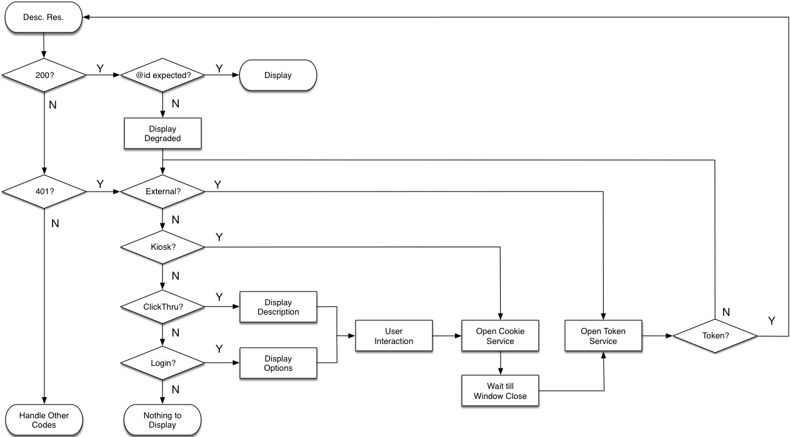

An Introduction to the International Image Interoperability Framework (IIIF)
Bruno P. Kinoshita
August, 2017
Wellington, New Zealand
Who am I?
Bruno P. Kinoshita
@kinow
- Software Engineer, NIWA, New Zealand
- PMC / Committer of Apache Jena, Apache OpenNLP, Apache Commons
- Java, Groovy, Python, PHP, Shell, JavaScript, Linux, drawing :-)
- Software engineering, bioinformatics, fuzzy logic, text processing, GIS, semantic web, NLP, SciArt
Agenda
- What is IIIF ?
- Who is using it ?
- Standards in the framework
- Existing implementations
- Demo
What is IIIF ?
Or Triple-Eye-Eff
- Group of standards for sharing and reusing images
- Can serve high resolution images
- Metadata enriched images
- Annotations
- Searching
- Proposed in 2011, published in 2012, by
- British Library, Stanford University, Bodleian Libraries from Oxford, the Bibliothèque nationale de France, Nasjonalbiblioteket Norway, Los Alamos National Laboratory Research Library, and Cornell University
- One participant institution in New Zealand
- http://iiif.io — @iiif_io — https://github.com/iiif
Some benefits of using IIIF
- Rich zoom, manipulation of size scale, region of interest, rotation, quality, format
- Cite, annotate, share with RESTful API's, JSON-LD
- Authentication through SSO systems
- Avoid vendor lock-in, reduce of long term costs
- Combine content from across repositories
- Global community
Who is using it ?
Can you guess ?
Yup
Libraries
But also...
Over 65 public participants
- Universities
- (Ohio, St. Louis, Stanford, Dublin, Edinburgh, Tokyo, Toronto, Yale, ...)
- Museums
- (Vatican, British, Carnegie, Cooper Hewitt, Harvard Art, ...)
- Companies, institutes, foundations
- (Zegami, text&bytes, TextGrid, synapctica solutions, Sirma Group, digirati, ITHAKA, Wellcome Foundation, Max Planck Institutes, Luna imaging, Klokan Technologies, Internet Archive, Europeana, Getty, 4Science, ...)
- Libraries too!
- (DPLA, biblissima, France, Sweden, NZ, British, Kyoto, Leiden, Library of Congress, Israel, Poland, Scotland, Wales, Virginia, World Digital Library, ...)
Map goes here...
Standards in the framework
Image API
Image API
- Provides an image delivery API
- V 1.0 Aug/2012, V2.0 Sep/2014, current version 2.1.1 Jun/2017
- Specifies a web service to serve images through HTTP or HTTPS
- URI specifies region, size, rotation, quality, format
- Can provide technical information about the image for clients
Example
- URI Syntax
- {scheme}://{server}{/prefix}/{identifier}/{region}/{size}/{rotation}/{quality}.{format}
- Original
- https://PRINCETON/loris/pudl0001....jp2/full/655,/0/default.jpg
- Rotated 33 degrees clockwise, smaller region, and converted to PNG:
- https://PRINCETON/loris/pudl0001....jp2/0,100,1000,1000/655,/33/default.png
-

Image Information request
- {scheme}://{server}{/prefix}/{identifier}/info.json
- https://PRINCETON/loris/pudl0001....jp2/info.json
Presentation API
Presentation API
- Provides information for clients to present image data to human users
- V 1.0 Aug/2013, V2.0 Sep/2014, current version 2.1.1 Jun/2017
- Allows to present an image, a painting, two sides of a photography, pages of a book, ...
- Adopts principles of Linked Data and Architecture of the Web, as well as Shared Canvas data model and JSON-LD
Example
- Recommended URI Syntax
- {scheme}://{host}/{prefix}/{identifier}/manifest
- Example from Biblissima
- http://BIBLISSIMA/manifests/ark:/12148/btv...485j/manifest.json
Content Search API
Content Search API
- Complements Image and Presentation API's
- V 1.0 Jun/2016 (with revisions)
- Allows working with dimensions, image information, and GIS
- Possible to use a DB, files, SPARQL Endpoint, search server, etc, as long as you can produce JSON-LD
- Example use cases: searching OCR text, transcribed context, translations, commentaries, metadata, etc
Authentication API
Authentication API
- Describes workflows to interact with arbitrary third party protocols
- V 1.0 (current) Jan/2017
- Talks about HTTPS, SSL, access tokens, cookies, headers,
Authentication API
http://iiif.io/api/auth/1.0/#access-token-service
Audio/Visual (WIP)
- Its objetive is to go beyond images, and support audio and videos
- Still work-in-progress
Existing implementations
Existing implementations
- Image servers
- Cantaloupe (Java, U. of Illinois/NCSA OS License)
- Loris (Python, BSD-2)
- IIPImage (C++, GPL)
- go-iiif (Go, BSD-3)
- ...
- Image viewers
- OpenSeaDragon (JS, BSD-3)
- Mirador (JS, AL)
- Leaflet-IIIF (JS, MIT)
- IIIFViewer (JS, BSD-2)
- ...
Existing implementations
- Annotation servers
- SimpleAnnotationServer (Java, AL)
- ...
- Annotation stores
- Apache Jena (Java, AL)
- Eclipse RDF4J/Sesame (Java, EDL)
- Stanford Triannon (Ruby, AL)
- Harvard Catch (Groovy, AL?)
- ...
Existing implementations
- And much, much more
- Image server shims
- Image API libraries
- Image tools
- Presentation API libraries
- Presentation API shims
- Presentation manifest tools
- Content search API's
- Validators
- ...
Acknowledgements
- Ioannis Moutsatsos (@ioannismou)
- NIWA (@niwa_nz)
- NeSI (@nesi_nz)
- SciCo 2017 organizers, sponsors, participants